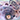

Cross
download album
download album
1. One, Two, Three, Four, Five, 666666
2. You’re As Tall As The Trees!
3. 8
4. Blleeee
5. Bailey Needs Boots
6. Boom
7. He Never Feeds Me
8. Banjo & Bass
9. Yeah Yeah Yeah Yeah
10. Instru Which Is Really Good
11. Wish I Wuz
12. 1
13. What Does It Mean
14. This Is My House
15. Soflascent Memoreis
16. Screaming Laughing
17. This Is Just My Place In Space
18. Bass
tracks found by henoheno
compiled by cev and oilage
released 2017
